[toc]
java知识点总结
说一下ArrayList和LinkdedList
- ArrayList: 底层为数组加链表的形式。因此随机访问快，但是新增(扩容/在指定位置)和删除慢
- LinkdedList: 底层为Node节点，链接了上一个和下一个的引用地址。如果要访问需要从头开始查找。随机访问慢，新增和删除快。只需要修改节点的引用就可以
说一下HasnMap的Put方法
- 根据key通过哈希算法与与运算得出数组下标
- 如果数组下标位置元素为空，则将key和value封闭为entry对象(jdk1.7中是entry，jdk1.8中是node)并放入该位置
- 如果数组下标位置元素不为空。
- 如果是jdk1.7。先判断是否需要扩容，不扩容就生成entry对象，使用头插法添加到当前位置的链表中
- 如果是jdk1.8。则会先判断当前位置上的node类型，看是红黑树node还是链表node
- 如果是红黑树node：将key和value封装为一个红黑树节点并添加到红黑树中。
- 如果是链表node：将key和value封装为一个链表node，并通过尾插法插入到链表的最后位置。在遍历链表的过程中，如果存在该key，则更新value。插入到链表结尾后，会判断当前链表的节点个数，如果
>=8，则该链表转成红黑树 - 将key和value封装为node插入到链表或红黑树后，再判断是否需要进行扩容。
HasnMap的hash方法
|
|
高位与低位异或是为了尽可能的随机。否则只有低位参与运算
- 当length=8时 下标运算结果取决于哈希值的低三位
- 当length=16时 下标运算结果取决于哈希值的低四位
- 当length=32时 下标运算结果取决于哈希值的低五位
- 当length=2的N次方， 下标运算结果取决于哈希值的低N位。
首先要明白，为什么用亦或计算，二进制位计算，a 只可能为0,1，b只可能为0,1。a中0出现几率为1/2,1也是1/2，b同理。
位运算符有三种，|，&，……，或，与，亦或。
a,b进行位运算，有4种可能 00，01,10,11
a或b计算 结果为1的几率为3/4,0的几率为1/4 a与b计算 结果为0的几率为3/4,1的几率为1/4, a亦或b计算 结果为1的几率为1/2,0的几率为1/2
所以，进行亦或计算，得到的结果肯定更为平均，不会偏向0或者偏向1，更为散列。
右移16位进行亦或计算，我将其拆分为两部分，前16位的亦或运算，和后16位的亦或运算，
后16位的亦或运算，即原hashcode后16位与原hashcode前16位进行亦或计算，得出的结果，前16位和后16位都有参与其中，保证了32位全部进行计算。
前16位的亦或运算，即原hasecode前16位与0000 0000 0000 0000进行亦或计算，结果只与前16位hashcode有关，同时亦或计算，保证结果为0的几率为1/2,1的几率为1/2，也是平均的。
所以为什么是右移16位，个人觉得博主说的原因是一部分，
也有一个原因是右移16位进行亦或计算的结果中，
（1）结果的后16位保证了hashcode32位全部参与计算，也保证了0,1平均，散列性
（2）结果的前16位保证hashcode前16位了0，1平均散列性，附带hashcode前16位参与计算。
(3) 16与16位数相同，利于计算，不需要补齐，移去位数数据
更多情况，hashmap只会用到前16位（临时数据一般不会这么大），所以（1）占主因
tableSizeFor
|
|
为了得到离给定数最接近的2的n次幂。先将此数减1，然后通过给移位，将低位都补1，最终加1，即可得到最临近的值。
假定一个数为2^n+1，由减1后，只能最高位为1，其余低位都为0。l
- n |= n >>> 1; 高2位为1
- n |= n >>> 2; 高4位为1
- n |= n >>> 4; 高8位为1
- n |= n >>> 8; 高16位为1
- n |= n >>> 16; 高32位为1。即所有低位都为1了。
- n + 1; 加1后即为最临近的2的n次幂
- n >= MAXIMUM_CAPACITY; 最高位为符号位，因此要判断是否越界
为什么Map桶中节点个数超过8才转为红黑树
|
|
空间和时间的权衡
putMapEntries
|
|
如果未初始化，+ 1.0F是为了添加后尽可能少的扩容
put方法
- 先通过hash计算出映射到哪个桶
- 如果桶上没有碰撞冲突，直接插入
- 如果冲突
- 如果该桶使用红黑树，则调用红黑树的方法插入数据
- 使用链式方法插入，如果链的长度达到临界值，则把链转换为红黑树
- 如果树中存在重复的键，则替换新值value，返回oldValue
- 如果size大于threshold(阈值)，则进行扩容
泛型
什么是泛型
泛型指参数化类型，使得代码可以适应多种类型
优点：
- 保证了类型安全。往列表添加元素时，编译器即可发现错误
- 消除了强制类型转换。
- 提高了代码的通用性。后期决定类型
泛型方法
尽量使用泛型方法而不是泛型类。
泛型参数列表置于返回值前。例如public <T> void f(T t)
擦除
在泛型代码内部，无法获取任何有关泛型参数类型的任何信息。Java的泛型使用擦除来实现，当使用泛型时，任何信息都被擦除，只知道在使用一个对象
|
|
extends使用
|
|
擦除的问题
所有关于参数的类型信息都在运行时丢失了，所以无法使用instanceof和new等
|
|
对应解决
- instanceof
通过引入
Class<T>1 2 3 4 5 6 7 8 9 10 11 12 13 14 15 16 17 18 19 20 21class A{} class B extends A{} public class TestInstance<T> { private Class<T> t; public TestInstance(Class<T> t){ this.t = t; } public boolean compare(Object obj){ return t.isInstance(obj); } public static void main(String[] args) { TestInstance<A> ti = new TestInstance<A>(A.class); System.out.println(ti.compare(new A())); // true System.out.println(ti.compare(new B())); // true } } - 创建类型实例
使用工厂
1 2 3 4 5 6 7 8 9 10 11 12 13 14 15 16 17 18 19 20 21 22 23interface Factory<T>{ T create(); } class Product<T>{ public <F extends Factory<T>> Product(F factory){ factory.create(); } } // 实际上，为 IntegerProductFactory class ProductFactory implements Factory<Integer>{ public Integer create(){ Integer integer = new Integer(10); System.out.println(integer); return integer; } } public class TestNew { public static void main(String[] args) { new Product(new ProductFactory()); } }
边界
擦除导致只能调用Object方法。所以引入了边界。就可以使用这些类型子集的方法
|
|
通配符和泛型上界和下界
上界<? extends Class>
|
|
下界<? super Class>
|
|
List < ? super Apple>， 代表容器内存放的是Apple的所有父类，所以有多态和上转型，这个容器时可以接受所有Apple父类的子类的。（多态的定义：父类可以接受子类型对象）Apple和Apple1都直接或间接继承了Fruit，所以Apple和Apple1是能够加入List < ? super Apple>这个容器的。
list.add(new Fruit())不能添加，正是因为第1点解释的，容器内存放的是Apple的所有父类，注意 所有 这个词，正是因为能存放所有，Apple的父类可能有Fruit1， Fruit2， Fruit3 ， 所以编译器根本不能识别你要存放哪个Apple的父类，因为这不能保证类型安全的原则。这从最后的Object apple = list.get(0)可以看出。
PECS原则
生产者：要从集合中读取类型T的数据，并且不能写入，可以使用 ? extends 通配符；(Producer Extends) 消费者：要向集合中写入类型T的数据，并且不需要读取，可以使用 ? super 通配符；(Consumer Super)
如果既要存又要取，那么就不要使用任何通配符。
指定上限情况下，只能从容器中取对象，不能添加对象，因为没办法确定你添加的是那种类型的对象，但是可以确定的是你取出来的对象是上限类及其子类，指定下限就是只能往容器里添加对象，因为没办法确定你要获取的对象是那种类型的，但是可以确定你放入的对象必定是下界的类或者超类，所以编译ok,jvm虚拟机对于不可确定的类型会报targetException
以下来自java.util.Collections#copy
|
|
擦拭法决定了泛型
- 不能是基本类型，例如：int；
- 不能获取带泛型类型的Class，例如：Pair
.class； - 不能判断带泛型类型的类型，例如：x instanceof Pair
； - 不能实例化T类型，例如：new T()。
- 泛型方法要防止重复定义方法，例如：public boolean equals(T obj)；
子类可以获取父类的泛型类型
这种使用<? extends Number>的泛型定义称之为上界通配符（Upper Bounds Wildcards），即把泛型类型T的上界限定在Number了。
使用类似<? extends Number>通配符作为方法参数时表示：
- 方法内部可以调用获取
Number引用的方法，例如：Number n = obj.getFirst();； - 方法内部无法调用传入
Number引用的方法（null除外），例如：obj.setFirst(Number n);。
即一句话总结：使用extends通配符表示可以读，不能写。
使用类似<T extends Number>定义泛型类时表示：
- 泛型类型限定为
Number以及Number的子类。
因此，使用<? super Integer>通配符表示：
- 允许调用
set(? super Integer)方法传入Integer的引用； - 不允许调用get()方法获得Integer的引用。
唯一例外是可以获取Object的引用：Object o = p.getFirst()。
换句话说，使用<? super Integer>通配符作为方法参数，表示方法内部代码对于参数只能写，不能读。
对比extends和super通配符
我们再回顾一下extends通配符。作为方法参数，<? extends T>类型和<? super T>类型的区别在于：
<? extends T>允许调用读方法T get()获取T的引用，但不允许调用写方法set(T)传入T的引用（传入null除外）；<? super T>允许调用写方法set(T)传入T的引用，但不允许调用读方法T get()获取T的引用（获取Object除外）。
一个是允许读不允许写，另一个是允许写不允许读。
PECS原则
何时使用extends，何时使用super？为了便于记忆，我们可以用PECS原则：Producer Extends Consumer Super。
即：如果需要返回T，它是生产者（Producer），要使用extends通配符；如果需要写入T，它是消费者（Consumer），要使用super通配符。
还是以Collections的copy()方法为例：
|
|
需要返回T的src是生产者，因此声明为List<? extends T>，需要写入T的dest是消费者，因此声明为List<? super T>。
总结
实际来说，extends和super定义了上下界
extends: null - Tsuper: T - Objectnull:可以视为一切对象的子类Object:可以视为一切对象的基类
对两个通配符来说，只能存取下界、读取上界。存null和读Object一般是无意义的。
所以对于extends来说，只能读取，适合作为生产者；super只能写入，适合作为消费者。
因为下界规定了元素的最小粒度的下限，实际上是放松了容器元素的类型控制,所以只有存入最小粒度才能确保存放正确。上界所有类的基类Object对象才能确保读取正确，但这样的话，元素的类型信息就全部丢失。
举例：
有三个类：苹果、梨、水果。苹果和梨扩展自水果.那如果是extends水果，可以确保读出来的是水果，苹果或梨都满足，所以可以用水果接收。但是如果存取的话，传参可能是苹果也可能是梨，程序无法自动确定苹果和梨的兼容性，所以只能存空。即：只能存取下界、读取上界。
对volatile的理解
volatile是Java虚拟机提供的轻量级的同步机制
- 保证可见性
- 不保证原子性 一个线程修改主内存值后，其它线程立即可见
- 禁止指令重排
JMM(Java内存模型)
Java Memory Model，是一种抽象概念，本身并不存在。它描述的是一组规则或规范，通过这组规范定义了程序中各个变量(包括实例字段，静态字段和构成数组对象的元素)的访问方式
- 关于同步的规定
- 线程解锁前，必须把共享变量的值刷新回主内存
- 线程加锁前，必须读取主内存的最新值到自己的工作内存
- 加锁解锁是同一把锁
- 具体说明 由于JVM
- 特性
Java异常类
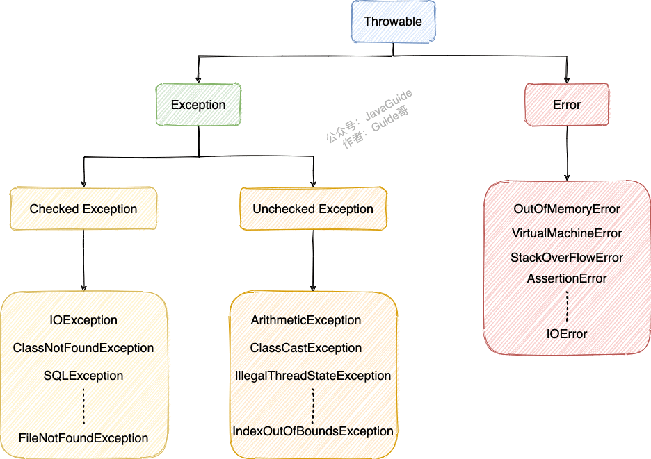
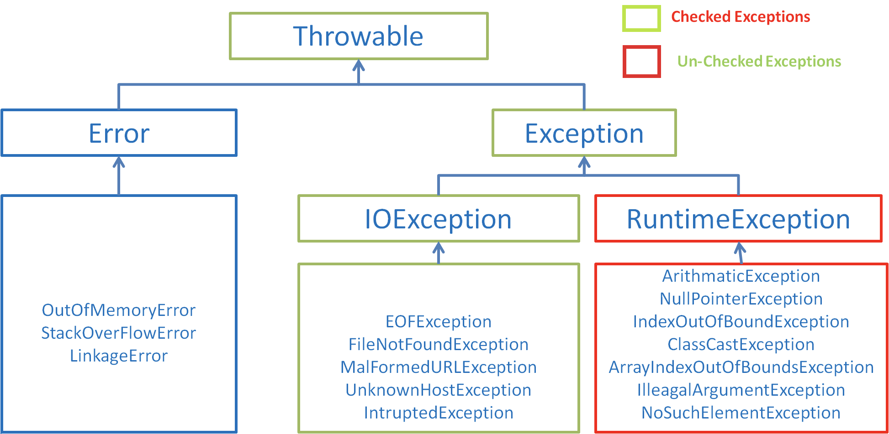
- Exception :程序本身可以处理的异常，可以通过 catch 来进行捕获。Exception 又可以分为 Checked Exception (受检查异常，必须处理) 和 Unchecked Exception (不受检查异常，可以不处理)。
- Error ：Error 属于程序无法处理的错误 ，我们没办法通过 catch 来进行捕获 。例如Java 虚拟机运行错误（Virtual MachineError）、虚拟机内存不够错误(OutOfMemoryError)、类定义错误（NoClassDefFoundError）等 。这些异常发生时，Java 虚拟机（JVM）一般会选择线程终止。
序列化和反序列化
- 序列化： 将数据结构或对象转换成二进制字节流的过程
- 反序列化：将在序列化过程中所生成的二进制字节流转换成数据结构或者对象的过程
序列化的主要目的是通过网络传输对象或者说是将对象存储到文件系统、数据库、内存中。
IO 流分为几种
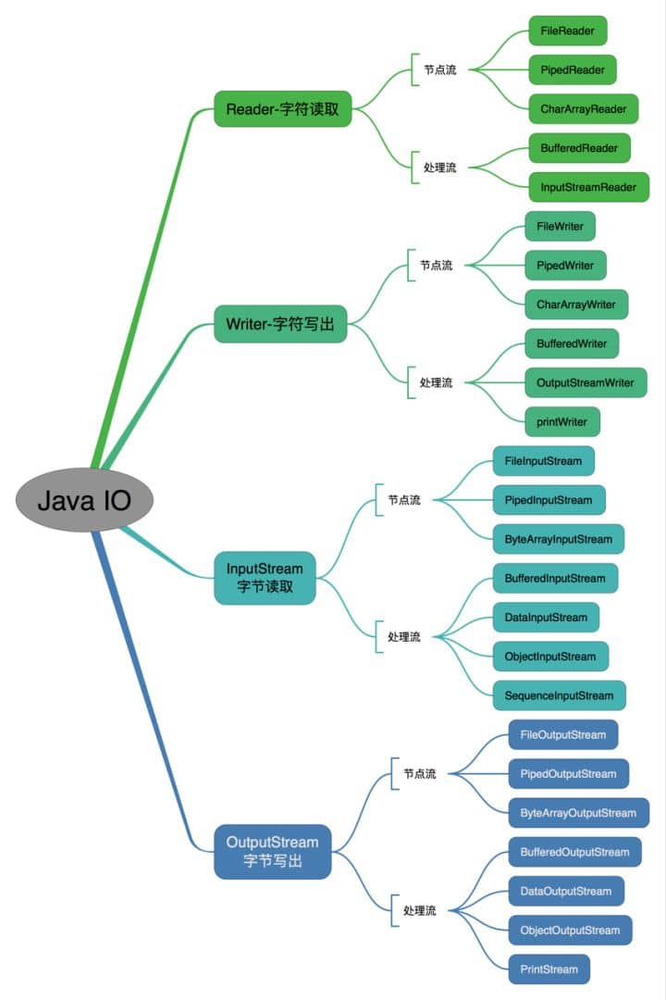
按操作对象分类结构图：
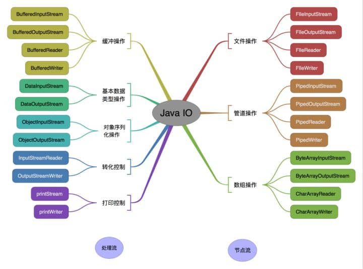
字符流是由 Java 虚拟机将字节转换得到的，问题就出在这个过程还算是非常耗时，并且，如果我们不知道编码类型就很容易出现乱码问题。所以， I/O 流就干脆提供了一个直接操作字符的接口，方便我们平时对字符进行流操作。如果音频文件、图片等媒体文件用字节流比较好，如果涉及到字符的话使用字符流比较好。
值传递&引用传递
很多程序设计语言（比如 C++、 Pascal )提供了两种参数传递的方式，不过，在 Java 中只有值传递。
- 一个方法不能修改一个基本数据类型的参数
- 对象引用作为参数。传递的还是值，不过，这个值是实参的地址。 如果方法中修改了引用指向新的地址，则原调用者值不变。如果是直接修改引用对应的对象内容，则调用者值会变

死锁的条件
<++>
ConcurrentHashMap的扩容机制
1.7版本
- 基于segment分段实现
- 每个segment相当于一个小型的hashmap
- 每个segment内部会进行扩容，和Hashmap的扩容逻辑类型
- 先生成新的数组，然后转移元素到新数组中
- 扩容的判断是每个segment内部单独判断的，判断是否超过阈值
1.8版本
- 当某个线程进行put时，如果发现ConcurrentHashMap正在进行扩容，那么该线程一起进行扩容
- 如果某个线程put时，发现没有正在进行扩容，则将key-value添加到ConcurrentHashMap中，然后判断是否超过阈值，超过了则进行扩容
- 支持多个线程同时扩容
- 扩容之前也先生成一个数组
- 在转换元素时，先将原数组分组，将每组分给不同的线程来进行元素的转移，每个线程负责一组或多组的元素转移工作
ConcurrentHashMap特性
- 使用bin列表的第一个node作为锁。同时，任何更新操作得首先判断first node是不是仍然是first
- We do not want to waste the space required to associate a distinct lock object with each bin, so instead use the first node of a bin list itself as a lock。
- Using the first node of a list as a lock does not by itself suffice though: When a node is locked, any update must first validate that it is still the first node after locking it, and retry if not. Because new nodes are always appended to lists, once a node is first in a bin, it remains first until deleted or the bin becomes invalidated (upon resizing).
- bin列表的第一个node，是通过cas写入的，无锁 Insertion (via put or its variants) of the first node in an empty bin is performed by just CASing it to the bin.
- 扩容因子为0.75。是因为此时的Hash冲突后导致的链表数据，遵循参数是0.5的泊松分布，超过8个后重复的概率很小 the frequency of nodes in bins follows a Poisson distribution (http://en.wikipedia.org/wiki/Poisson_distribution) with a parameter of about 0.5 on average, given the resizing threshold of 0.75, although with a large variance because of resizing granularity.
- 最大容量
1<<30，超过后会导致Hash冲突，然后存入链表中。理论能存储的上限是无限的
反射
|
|
通过类加载器获取 Class 对象不会进行初始化，意味着不进行包括初始化等一系列步骤，静态代码块和静态对象不会得到执行
- 知道具体类的情况下可以使用：
但是我们一般是不知道具体类的，基本都是通过遍历包下面的类来获取 Class 对象，通过此方式获取 Class 对象不会进行初始化
1Class alunbarClass = TargetObject.class; - 通过 Class.forName()传入类的全路径获取：
1Class alunbarClass1 = Class.forName("cn.javaguide.TargetObject"); - 通过对象实例instance.getClass()获取：
1 2TargetObject o = new TargetObject(); Class alunbarClass2 = o.getClass(); - 通过类加载器xxxClassLoader.loadClass()传入类路径获取:
1Class clazz = ClassLoader.loadClass("cn.javaguide.TargetObject");
动态代理
使用代理对象来代替对真实对象(real object)的访问，这样就可以在不修改原目标对象的前提下，提供额外的功能操作，扩展目标对象的功能。
-
静态代理在编译时就将接口、实现类、代理类这些都变成了一个个实际的 class 文件。
-
动态代理是在运行时动态生成类字节码，并加载到 JVM 中的
就 Java 来说，动态代理的实现方式有很多种，比如 JDK 动态代理、CGLIB 动态代理等等。
JDK 动态代理类使用步骤
- 定义一个接口及其实现类；
- 自定义 InvocationHandler 并重写invoke方法，在 invoke 方法中我们会调用原生方法（被代理类的方法）并自定义一些处理逻辑；
- 通过 Proxy.newProxyInstance(ClassLoader loader,Class[] interfaces,InvocationHandler h) 方法创建代理对象；
1.定义发送短信的接口
|
|
2.实现发送短信的接口
|
|
3.定义一个 JDK 动态代理类
|
|
invoke() 方法: 当我们的动态代理对象调用原生方法的时候，最终实际上调用到的是 invoke() 方法，然后 invoke() 方法代替我们去调用了被代理对象的原生方法。
4.获取代理对象的工厂类
|
|
getProxy() ：主要通过Proxy.newProxyInstance（）方法获取某个类的代理对象
5.实际使用
|
|
运行上述代码之后，控制台打印出：
|
|
JDK 动态代理有一个最致命的问题是其只能代理实现了接口的类。
CGLIB 动态代理机制
CGLIB (opens new window)(Code Generation Library)是一个基于ASM (opens new window)的字节码生成库，它允许我们在运行时对字节码进行修改和动态生成。CGLIB 通过继承方式实现代理。很多知名的开源框架都使用到了CGLIB (opens new window)， 例如 Spring 中的 AOP 模块中：如果目标对象实现了接口，则默认采用 JDK 动态代理，否则采用 CGLIB 动态代理。
在 CGLIB 动态代理机制中 MethodInterceptor 接口和 Enhancer 类是核心。
- 定义一个类；
- 自定义 MethodInterceptor 并重写 intercept 方法，intercept 用于拦截增强被代理类的方法，和 JDK 动态代理中的 invoke 方法类似；
- 通过 Enhancer 类的 create()创建代理类；
- 依赖引入
|
|
- 实现类
|
|
- 自定义方法拦截器
|
|
- 获取代理类
|
|
- 实际使用
|
|
- 输出
before method send
send message:java
after method send
JDK 动态代理和 CGLIB 动态代理对比
- JDK 动态代理只能代理实现了接口的类或者直接代理接口，而 CGLIB 可以代理未实现任何接口的类。 另外， CGLIB 动态代理是通过生成一个被代理类的子类来拦截被代理类的方法调用，因此不能代理声明为 final 类型的类和方法。
- 就二者的效率来说，大部分情况都是 JDK 动态代理更优秀，随着 JDK 版本的升级，这个优势更加明显。
JVM
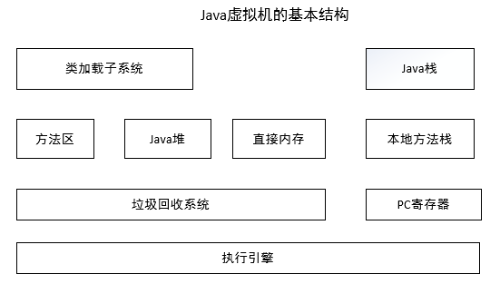
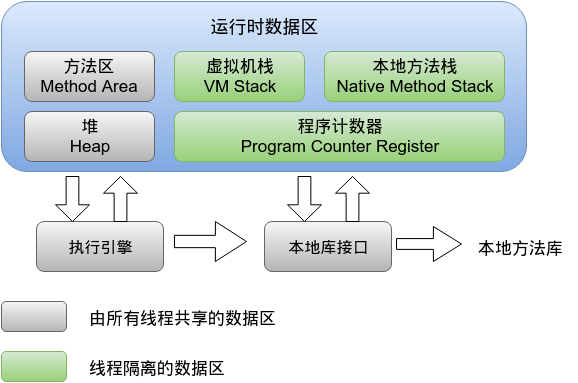
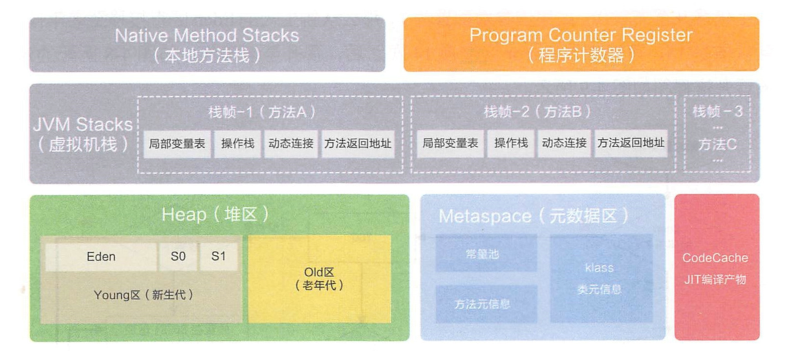
类加载子系统
负责从文件系统或者网络中加载class信息。加载在类信息，存放于方法区。
方法区
存放类信息。还会存放运行时常量信息，包括：字符串字面量和数字常量
Java虚拟机规范中定义方法区是堆的一个逻辑部分，但是别名Non-Heap(非堆)，以与Java堆区分
特点
- 线程共享 方法区是堆的一个逻辑部分，是线程共享的。
- 永久代 方法区中的信息一般需要长期存在，而且它又是堆的逻辑分区，因此用堆的划分方法。我们把方法区称为永久代。
- 内存回收效率低
- Java虚拟机规范中，对方法区可以不实现垃圾收集。
- 对方法区的内存回收的主要目标是：常量池的回收和类型的卸载
Runtime Constant Pool(运行时常量池)
定义
运行时常量池是方法区的一种。
方法区中存放：类信息、常量(存储在运行时常量池中)、静态变量、即时编译器编译后的代码
常量池中存放音译时期产生的各种字面量和符号引用。class文件中的常量池中的所有内容在类被加载后存放到方法区的运行时常量池中
|
|
特性
具有动态性。String类中的intern()方法就是采用了运行时常量池的动态性。当调用intern方法时，如果池已经包含一个等于引String对象的字符串，则返回池中的字符串。否则，将此String对象添加到池中，并返回此String对象的引用
可能抛出的异常
运行时常量池是方法区的一部分，受到方法区内存的限制。当常量池无法再申请到内存时，就会抛出OutOfMemoryError
Java堆
在虚拟机启动的时候建立。几乎所有的Java对象实例都存放在Java堆中。堆空间是所有线程共享的
Heap是OOM故障最主要的发源地。堆由垃圾收集器自动回收，堆区由各子线程共享使用
设定初始值和最大值。为了避免堆空间不断地扩容与回缩，一般将Xms和Xmx设置成一样大小
-Xms256m -Xmx1g
- -X: 表示是JVM运行参数
- ms: memory start
- mx: memory max
堆分成两大块：新生代和老年代
对象产生之初在新生代，步入暮年进入老年代。老年代也容纳在新生代无法容纳的超大对象
新生代=1个Eden区 + 2个Survivor区
绝大部分对象在Eden区生成，当Eden区满时，会触发Young gc。垃圾回收的时候，在Eden区实现清除策略，没有被引用的对象则直接回收。依然存活的对象会被送到Survivor区
Survivor分为S0和S1两块内存空间。每次Young gc的时候，将存活的对象复制到未使用的那块空间，然后将当前正在使用的空间完全清除，交换两块空间的使用状态
如果Young GC要移送的对象大于Survivor区容量上限，则直接移交给老年代
每个对象都有一个计数器，每次Young GC都会加1。
-XX:MaxTenuringThreshold 配置计数器的值到达某个阈值的时候，对象从新生代晋升至老年代。默认值是15
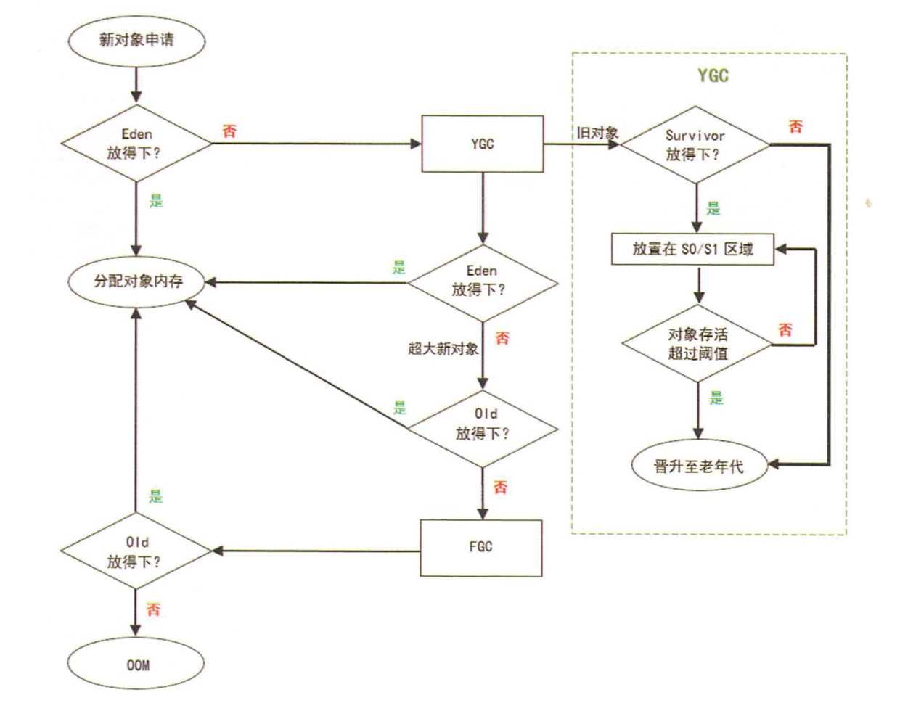
出错时的堆内信息对解决问题非常有帮助。
-XX:+HeapDumpOnOutOfMemoryError 在JVM遇到OutOfMemory异常时输出堆内信息
特点
Java虚拟机所需要管理的内存中最大的一块
堆内存物理上不一定要连续，类似磁盘空间
主流的虚拟机堆的大小是可扩展的(-Xmx和-Xms)
所有的线程都访问一个堆。而程序计数器、Java虚拟机栈、本地方法栈都是一个线程对应一个
Program Counter Register(程序计数器)：
Register 的命名源于CPU的寄存器，CPU只有把数据装载到寄存器才能够运行
cpu执行线程的指令，是持续在中断和恢复切换的。每个线程创建后，都有自己的程序计数器和栈。线程执行或恢复都依赖程序计数器。程序计数器在各个线程之间互不影响，此区域也不会发生内存溢出异常。
定义
程序计数器是一块较小的内存空间，可看作当前线程正在执行的字节码的行号指示器
如果当前线程正在执行的是
- Java方法 计数器记录的就是当前线程正在执行的字节码指令的地址
- 本地方法 那么程序计数器值为undefined
作用
程序计数器有两个作用
- 字节码解释器通过改变程序计数器来依次读取指令，从而实现代码的流程控制，如：顺序执行、选择、循环、异常处理
- 在多线程的情况下，程序计数器用于记录当前线程执行的位置，从而当线程被切换回来的时候能够知道该线程上次运行到哪儿了。
特点
- 一块较小的内存空间
- 线程私有。每条线程都有一个独立的程序计数器。
- 是唯一一个不会出现OOM的内存区域。
- 生命周期随着线程的创建而创建，随着线程的结束而死亡。
JVM Stack(Java虚拟机栈)
定义
- 相对于基于寄存器的运行环境来说，JVM是基于栈结构的运行环境
- 栈结构移植性更好，可控性更强
- JVM中的虚拟机栈是描述Java方法执行的内存区域，它是线程私有的
在执行引擎运行时，所有指令都只能针对当前栈帧进行操作
每一个方法从被调用到执行完成的过程，都对应着一个个栈帧在JVM栈中的入栈和出栈过程
StackOverflowError表示请求的栈溢出，导致内存耗尽，通常出现在递归方法中
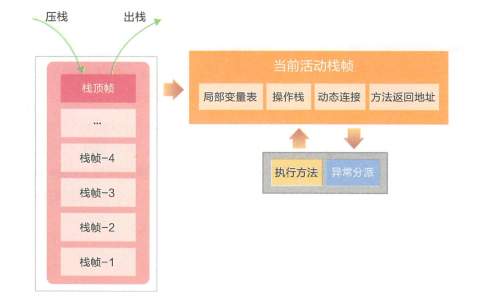
栈帧在整个JVM体系中的地位颇高,包括局部变量表、操作栈、动态连接、方法返回地址等
-
局部变量表
- 存放方法参数和局部变量
- 局部变量没有准备阶段，必须显式初始化。类属性变量有准备阶段和初始化阶段
- 非静态方法，在
index[0]位置上存储方法所属对象的实例引用。随后存储参数和局部变量 - 字节码指令中的STORE指令就是将操作栈中计算完成的局部变量写回局部变量表的存储空间内
-
操作栈
- 一个初始状态为空的桶式结构栈
- 方法执行过程中，会有各种指令往栈中写入和提取信息
- JVM的执行引擎是基于栈的执行引擎，其中的栈指的就是操作栈
- 字节码指令集的定义都是基于栈类型的,栈的深度在方法元信息的stack属性中
-
动态链接 每个栈帧中包含一个在常量池中对当前方法的引用，目的是支持方法调用过程的动态连接
-
方法返回地址
方法返回时有两种退出情况
方法退出的过程，相当于弹出当前栈帧
- 正常退出 正常执行到任何方法的返回字节码指令，如RETURN/ IRETURN/ ARETURN等
- 异常退出
- 退出可能有三种方式:
- 返回值压入，上层调用栈帧
- 异常信息抛给能够处理的栈帧
- PC计数器指向方法调用后的下一条指令
注意：人们常说，Java的内存空间分为“栈”和“堆”，栈中存放局部变量，堆中存放对象。 这句话不完全正确！这里的“堆”可以这么理解，但这里的“栈”就是现在讲的虚拟机栈,或者说Java虚拟机栈中的局部变量表部分. 真正的Java虚拟机栈是由一个个栈帧组成，而每个栈帧中都拥有：局部变量表、操作数栈、动态链接、方法出口信息.
示例
|
|
|
|
++i同i++
|
|
特点
局部变量表的创建是在方法被执行的时候，随着栈帧的创建而创建的。但是大小在编译期就确定，在创建的时候只需分配事先规定好的大小即可。在方法运行过程中，表的大小不会改变
Java虚拟机栈会出现两种异常
- StackOverflowError 若Java虚拟机栈的内存大小不允许动态扩展，那么当线程请求的栈深度大于虚拟机的最大深度时，就抛出此异常
- OutOfMemoryError 若Java虚拟机栈的内存大小允许动态扩展，且当线程请求栈时内存用完了，无法再动态扩展了，此时抛出OutOfMemoryError异常
Java虚拟机栈是线程私有的，随着线程的创建而创建，随着线程的死亡而死亡
Native Method Stack(本地方法栈)
本地方法栈和Java虚拟机栈实现的功能与抛出异常几乎相同
虚拟机栈是为虚拟机执行Java方法(字节码)服务，本地方法区则为虚拟机使用到的Native方法服务
本地方法可以通过**JNI(Java Native Interface)**访问虚拟机运行时的数据区，甚至可以调用寄存器，具有和JVM相同的能力和权限
内存不足时，本地方法栈会抛出native heap OutOfMemory
最著名的本地方法应该是System.currenttTimeMillis()，JNI使Java深度使用OS的特性功能，利用非Java代码
Direct Memory(直接内存)
直接内存不是虚拟机运行时数据区的一部分，也不是JVM规范中定义的内存区域。但是也会抛出OutOfMemory
在JDK1.4中加入了NIO(New Input/Output)类，引入了一种基于管道和缓冲区的IO方式，它可以使用Native函数库直接分配堆外内存，然后通过一个存储在堆里的DirectByteBuffer对象作为这块内存的引用来操作堆外内存的数据
程序计数器、Java虚拟机栈、本地方法栈是线程私有的，即每个线程都拥有各自的程序计数器、Java虚拟机栈、本地方法区。并且他们的生命周期和所属的线程一样。 而堆、方法区是线程共享的，在Java虚拟机中只有一个堆、一个方法栈。并在JVM启动的时候就创建，JVM停止才销毁。
Metaspace(元空间)
在JDK1.8，元空间的前身Perm区已经被淘汰，在JDK7及之前的版本中，只有Hotspot才有Perm区(永久代)。在启动时固定大小，很难调优，Full GC时会移动类元信息
如，某个工程中，在运行过程中需要不断动态加载很多的类，经常出现
Exception in thread ‘dubbo client x.x connector' java.lang.OutOfMemoryError: PermGenspace
需要设定参数
-XX:MaxPermSize= l280m
JDK8使用元空间替换永久代。元空间在本地内存中分配。只要本地内存足够，它不会出现java.lang.OutOfMemoryError: PermGen space
可以使用新参数MaxMetaspaceSize来限制本地内存分配给类元数据的大小.
- 字符串常量移至堆内存
- 其它内容包括：类元信息、字段、静态属性、方法、常量等都移动到元空间
每个类加载器都有它的内存区域-元空间
元空间内存分配模型
- 绝大多数的类元数据的空间都在本地内存中分配
- 用来描述类元数据的对象也被移除
- 为元数据分配了多个映射的虚拟内存空间
- 为每个类加载器分配一个内存块列表
- 块的大小取决于类加载器的类型
- Java反射的字节码存取器（sun.reflect.DelegatingClassLoader ）占用内存更小
- 空闲块内存返还给块内存列表
- 当元空间为空，虚拟内存空间会被回收
- 减少了内存碎片
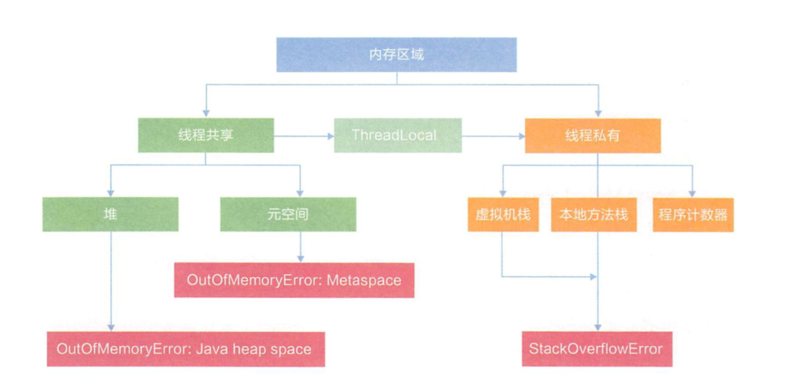
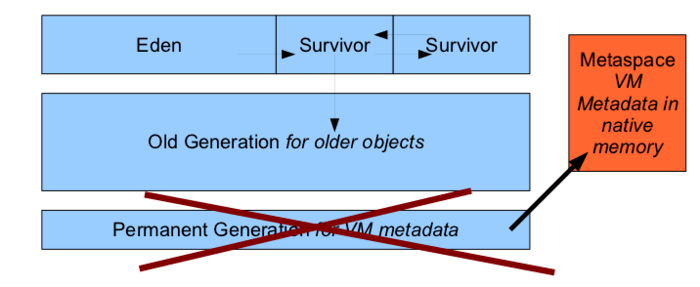
JVM关闭
正常关闭：当最后一个非守护线程结束或调用了System.exit或通过其他特定于平台的方式,比如ctrl+c。 强制关闭：调用Runtime.halt方法，或在操作系统中直接kill（发送single信号）掉JVM进程。 异常关闭：运行中遇到RuntimeException 异常等
关闭钩子本质上是一个线程（也称为hock线程），可以通过Runtime的addshutdownhock （Thread hock）向主jvm注册一个关闭钩子。hock线程在jvm正常关闭时执行，强制关闭不执行。
对于在jvm中注册的多个关闭钩子，他们会并发执行，jvm并不能保证他们的执行顺序。
容器
<++>
spring
事务
service有@Transactional( rollbackFor={Exception.class,RuntimeException.class})注解时，只有在整个service方法执行完后，都会提交事务。
自动提交事务：每条单独的语句都是一个事务。每个语句后都隐含一个commit。 （默认）
显式事务：以begin transaction显示开始，以commit或rollback结束。
隐式事务：当连接以隐式事务模式进行操作时，sql server数据库引擎实例将在提交或回滚当前事务后自动启动新事务。无须描述事物的开始，只需提交或回滚每个事务。但每个事务仍以commit或rollback显式结束。连接将隐性事务模式设置为打开之后，当数据库引擎实例首次执行下列任何语句时，都会自动启动一个隐式事务：alter table，insert，create，open ，delete，revoke ，drop，select， fetch ，truncate table，grant，update在发出commit或rollback语句之前，该事务将一直保持有效。在第一个事务被提交或回滚之后，下次当连接执行以上任何语句时，数据库引擎实例都将自动启动一个新事务。该实例将不断地生成隐性事务链，直到隐性事务模式关闭为止。
事务传播
| 传播行为 | 含义 |
|---|---|
| TransactionDefinition.PROPAGATION_REQUIRED | 如果当前没有事务，就新建一个事务，如果已经存在一个事务，则加入到这个事务中。这是最常见的选择。 |
| TransactionDefinition.PROPAGATION_SUPPORTS | 支持当前事务，如果当前没有事务，就以非事务方式执行。 |
| TransactionDefinition.PROPAGATION_MANDATORY | 表示该方法必须在事务中运行，如果当前事务不存在，则会抛出一个异常 |
| TransactionDefinition.PROPAGATION_REQUIRED_NEW | 表示当前方法必须运行在它自己的事务中。一个新的事务将被启动。如果存在当前事务，在该方法执行期间，当前事务会被挂起。 |
| TransactionDefinition.PROPAGATION_NOT_SUPPORTED | 表示该方法不应该运行在事务中。如果当前存在事务，就把当前事务挂起。 |
| TransactionDefinition.PROPAGATION_NEVER | 表示当前方法不应该运行在事务上下文中。如果当前正有一个事务在运行，则会抛出异常 |
| TransactionDefinition.PROPAGATION_NESTED | 如果当前存在事务，则在嵌套事务内执行。如果当前没有事务，则执行与PROPAGATION_REQUIRED类似的操作。 |
@Transactional注解
可以作用于接口、接口方法、类以及类方法上。当作用于类上时，该类的所有 public 方法将都具有该类型的事务属性，同时，我们也可以在方法级别使用该标注来覆盖类级别的定义。
虽然@Transactional 注解可以作用于接口、接口方法、类以及类方法上，但是 Spring 建议不要在接口或者接口方法上使用该注解，因为这只有在使用基于接口的代理时它才会生效。另外， @Transactional注解应该只被应用到 public 方法上，这是由Spring AOP的本质决定的。如果你在 protected、private 或者默认可见性的方法上使用 @Transactional 注解，这将被忽略，也不会抛出任何异常。
默认情况下，只有来自外部的方法调用才会被AOP代理捕获，也就是，类内部方法调用本类内部的其他方法并不会引起事务行为，即使被调用方法使用@Transactional注解进行修饰。
只有public和外部的方法调用，才能使用aop拦截到
为了对使用查询接口的缓存
(ElasticQueryService) AopContext.currentProxy()可获取到当前的代理对象
组件
rocketmq
消息队列 RocketMQ 可为分布式应用系统提供异步解耦和削峰填谷的能力，同时也具备互联网应用所需的海量消息堆积、高吞吐、可靠重试等特性。
- Topic：消息主题，用于将一类的消息进行归类，比如订单主题，就是所有订单相关的消息都可以由这个主题去承载，生产者向这个主题发送消息。
- 生产者：负责生产消息并发送消息到 Topic 的角色。
- 消费者：负责从 Topic 接收并消费消息 的角色。
- 消息：生产者向 Topic 发送的内容，会被消费者消费。
- 消息属性：生产者发送的时候可以为消息自定义一些业务相关的属性，比如 Message Key 和 Tag 等。
- Group：一类生产者或消费者，这类生产者或消费者通常生产或消费同一类消息，且消息发布或订阅的逻辑一致。
审批批量导入数据
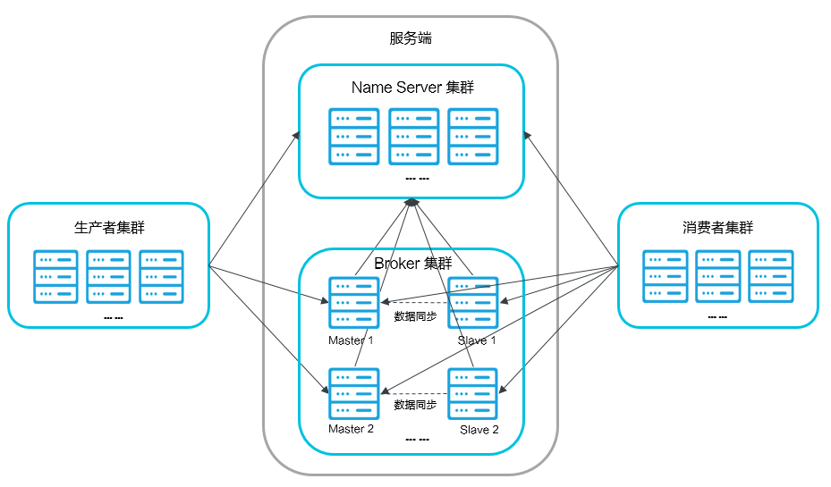
- Name Server：是一个几乎无状态节点，可集群部署，在消息队列 RocketMQ 版中提供命名服务，更新和发现 Broker 服务。就是一个注册中心。
- Broker：消息中转角色，负责存储消息，转发消息。分为 Master Broker 和 Slave Broker，一个 Master Broker 可以对应多个 Slave Broker，但是一个 Slave Broker 只能对应一个 Master Broker。Broker 启动后需要完成一次将自己注册至 Name Server 的操作；随后每隔 30s 定期向 Name Server 上报 Topic 路由信息。
- 生产者：与 Name Server 集群中的其中一个节点（随机）建立长链接（Keep-alive），定期从 Name Server 读取 Topic 路由信息，并向提供 Topic 服务的 Master Broker 建立长链接，且定时向 Master Broker 发送心跳。
- 消费者：与 Name Server 集群中的其中一个节点（随机）建立长连接，定期从 Name Server 拉取 Topic 路由信息，并向提供 Topic 服务的 Master Broker、Slave Broker 建立长连接，且定时向 Master Broker、Slave Broker 发送心跳。Consumer 既可以从 Master Broker 订阅消息，也可以从 Slave Broker 订阅消息，订阅规则由 Broker 配置决定。
一个JVM只能绑定一个nameserver
幂等性：消息体每次都为完整的内容，写入的时候，使用mp.saveOrUpdate。
es的一致性，通过update实现
|
|
sharding
进行分表
重写saveOrUpdate：为了避免所有分表的查询，先使用分表主键project_no查询出所有结果，然后去匹配id，如果有就更新，没有就写入
http
HTTP三点注意事项：
- HTTP是无连接：无连接的含义是限制每次连接只处理一个请求。服务器处理完客户的请求，并收到客户的应答后，即断开连接。采用这种方式可以节省传输时间。
- HTTP是媒体独立的：这意味着，只要客户端和服务器知道如何处理的数据内容，任何类型的数据都可以通过HTTP发送。客户端以及服务器指定使用适合的MIME-type内容类型。
- HTTP是无状态：HTTP协议是无状态协议。无状态是指协议对于事务处理没有记忆能力。缺少状态意味着如果后续处理需要前面的信息，则它必须重传，这样可能导致每次连接传送的数据量增大。另一方面，在服务器不需要先前信息时它的应答就较快。
CGI(Common Gateway Interface) 是 HTTP 服务器与你的或其它机器上的程序进行“交谈”的一种工具，其程序须运行在网络服务器上。
客户端发送一个HTTP请求到服务器的请求消息包括以下格式：请求行（request line）、请求头部（header）、空行和请求数据四个部分组成，下图给出了请求报文的一般格式。

HTTP响应也由四个部分组成，分别是：状态行、消息报头、空行和响应正文。

| 序号 | 方法 | 描述 |
|---|---|---|
| 1 | GET | 请求指定的页面信息，并返回实体主体。 |
| 2 | HEAD | 类似于 GET 请求，只不过返回的响应中没有具体的内容，用于获取报头 |
| 3 | POST | 向指定资源提交数据进行处理请求（例如提交表单或者上传文件）。数据被包含在请求体中。POST 请求可能会导致新的资源的建立和/或已有资源的修改。 |
| 4 | PUT | 从客户端向服务器传送的数据取代指定的文档的内容。 |
| 5 | DELETE | 请求服务器删除指定的页面。 |
| 6 | CONNECT | HTTP/1.1 协议中预留给能够将连接改为管道方式的代理服务器。 |
| 7 | OPTIONS | 允许客户端查看服务器的性能。 |
| 8 | TRACE | 回显服务器收到的请求，主要用于测试或诊断。 |
| 9 | PATCH | 是对 PUT 方法的补充，用来对已知资源进行局部更新 。 |
- 200 - 请求成功
- 301 - 资源（网页等）被永久转移到其它URL
- 404 - 请求的资源（网页等）不存在
- 500 - 内部服务器错误
| 分类 | 分类描述 |
|---|---|
| 1** | 信息，服务器收到请求，需要请求者继续执行操作 |
| 2** | 成功，操作被成功接收并处理 |
| 3** | 重定向，需要进一步的操作以完成请求 |
| 4** | 客户端错误，请求包含语法错误或无法完成请求 |
| 5** | 服务器错误，服务器在处理请求的过程中发生了错误 |
| 100 | Continue | 继续。客户端应继续其请求 |
|---|---|---|
| 101 | Switching Protocols | 切换协议。服务器根据客户端的请求切换协议。只能切换到更高级的协议，例如，切换到HTTP的新版本协议 |
| 200 | OK | 请求成功。一般用于GET与POST请求 |
| 201 | Created | 已创建。成功请求并创建了新的资源 |
| 202 | Accepted | 已接受。已经接受请求，但未处理完成 |
| 203 | Non-Authoritative Information | 非授权信息。请求成功。但返回的meta信息不在原始的服务器，而是一个副本 |
| 204 | No Content | 无内容。服务器成功处理，但未返回内容。在未更新网页的情况下，可确保浏览器继续显示当前文档 |
| 205 | Reset Content | 重置内容。服务器处理成功，用户终端（例如：浏览器）应重置文档视图。可通过此返回码清除浏览器的表单域 |
| 206 | Partial Content | 部分内容。服务器成功处理了部分GET请求 |
| 300 | Multiple Choices | 多种选择。请求的资源可包括多个位置，相应可返回一个资源特征与地址的列表用于用户终端（例如：浏览器）选择 |
| 301 | Moved Permanently | 永久移动。请求的资源已被永久的移动到新URI，返回信息会包括新的URI，浏览器会自动定向到新URI。今后任何新的请求都应使用新的URI代替 |
| 302 | Found | 临时移动。与301类似。但资源只是临时被移动。客户端应继续使用原有URI |
| 303 | See Other | 查看其它地址。与301类似。使用GET和POST请求查看 |
| 304 | Not Modified | 未修改。所请求的资源未修改，服务器返回此状态码时，不会返回任何资源。客户端通常会缓存访问过的资源，通过提供一个头信息指出客户端希望只返回在指定日期之后修改的资源 |
| 305 | Use Proxy | 使用代理。所请求的资源必须通过代理访问 |
| 306 | Unused | 已经被废弃的HTTP状态码 |
| 307 | Temporary Redirect | 临时重定向。与302类似。使用GET请求重定向 |
| 400 | Bad Request | 客户端请求的语法错误，服务器无法理解 |
| 401 | Unauthorized | 请求要求用户的身份认证 |
| 402 | Payment Required | 保留，将来使用 |
| 403 | Forbidden | 服务器理解请求客户端的请求，但是拒绝执行此请求 |
| 404 | Not Found | 服务器无法根据客户端的请求找到资源（网页）。通过此代码，网站设计人员可设置"您所请求的资源无法找到"的个性页面 |
| 405 | Method Not Allowed | 客户端请求中的方法被禁止 |
| 406 | Not Acceptable | 服务器无法根据客户端请求的内容特性完成请求 |
| 407 | Proxy Authentication Required | 请求要求代理的身份认证，与401类似，但请求者应当使用代理进行授权 |
| 408 | Request Time-out | 服务器等待客户端发送的请求时间过长，超时 |
| 409 | Conflict | 服务器完成客户端的 PUT 请求时可能返回此代码，服务器处理请求时发生了冲突 |
| 410 | Gone | 客户端请求的资源已经不存在。410不同于404，如果资源以前有现在被永久删除了可使用410代码，网站设计人员可通过301代码指定资源的新位置 |
| 411 | Length Required | 服务器无法处理客户端发送的不带Content-Length的请求信息 |
| 412 | Precondition Failed | 客户端请求信息的先决条件错误 |
| 413 | Request Entity Too Large | 由于请求的实体过大，服务器无法处理，因此拒绝请求。为防止客户端的连续请求，服务器可能会关闭连接。如果只是服务器暂时无法处理，则会包含一个Retry-After的响应信息 |
| 414 | Request-URI Too Large | 请求的URI过长（URI通常为网址），服务器无法处理 |
| 415 | Unsupported Media Type | 服务器无法处理请求附带的媒体格式 |
| 416 | Requested range not satisfiable | 客户端请求的范围无效 |
| 417 | Expectation Failed | 服务器无法满足Expect的请求头信息 |
| 500 | Internal Server Error | 服务器内部错误，无法完成请求 |
| 501 | Not Implemented | 服务器不支持请求的功能，无法完成请求 |
| 502 | Bad Gateway | 作为网关或者代理工作的服务器尝试执行请求时，从远程服务器接收到了一个无效的响应 |
| 503 | Service Unavailable | 由于超载或系统维护，服务器暂时的无法处理客户端的请求。延时的长度可包含在服务器的Retry-After头信息中 |
| 504 | Gateway Time-out | 充当网关或代理的服务器，未及时从远端服务器获取请求 |
| 505 | HTTP Version not supported | 服务器不支持请求的HTTP协议的版本，无法完成处理 |
问题
es
数据库同步es
需要将数据库中的数据同步到es保持一致。
背景：数据库使用了sharding-jdbc分表。路由计算为表名+入库年份+(hash(id) % num)，存入了es中(数据量太大，存入表中查询路由信息会很慢)。
现象：推送过程中存在num和索引变动的情况：数据入库时，存入了索引1，分片数是num1，后来又改动了配置的索引名为索引2，分片数量为num2。导致现在的路由信息在数据库中对应分表中找不到。
解决：重新从数据库中读取id，计算路由信息后，修改索引中内容。
将数据库中分表的id，查询出来后写入到一个文件。使用es的_bulk接口进行批量写入数据
- es多分片导致
- es 7.14 size设置为max_value溢出
项目
approval
wkhtmltopdf
转换html到pdf，做为打印模板
反射
- aop拦截所有post请求，对其中相同参数的值进行缓存，然后反射执行
- es里面的数据返回到前端时，需要把小驼峰转换成下划线。通过在实体类上定义的
@TableField注解，取得对应的列名。正好复用MP的定义
supervise
- 消费mq消息增加并发模式。接收历史消息时，通过导入到临时表生成mq消息，此时只有insert，对顺序不重要，可使用并发模式消费。消费完历史数据后，通过配置项修改顺序消费
- 消费失败逻辑处理。对消费失败的消息，记录失败时的sql及原因，写入到sql.log文件中。对重试两次后还失败的，发送mq消息体到es索引中，方便查询。对应的es索引名为`supervise-nested-error {spring.elasticsearch.index}-2021"，{spring.elasticsearch.index} 为配置文件中的值。
- p6spy,自定义modulelist，对报错的sql进行拦截，写入到单独的文件中
1 2 3 4 5 6 7 8 9 10 11 12 13 14public class ErrorLoggingEventListener extends LoggingEventListener { private static final Logger logger = LoggerFactory.getLogger("EXCHANGE"); @Override protected void logElapsed( Loggable loggable, long timeElapsedNanos, Category category, SQLException e) { if (e != null) { String sql = loggable.getSqlWithValues(); logger.error("sql [{}] 执行失败。原因：{} ", sql.replaceAll("[\\s]+", " "), e.getMessage()); // super.logElapsed(loggable, timeElapsedNanos, category, e); } } }
- p6spy,自定义modulelist，对报错的sql进行拦截，写入到单独的文件中
- 修改rangeIo格式：年份+hash(projectNo)+分表。在生成路由规则由就确认对应的分表。扩展表时只影响后续办件的路由规则。
- 另，对于材料和过程、主键非projectNo的，由原来根据id查询所有表修改为通过projectNo查询出所有数据然后筛选。避免分表过多时速度下降
- 对于已分表的查询，查询单条数据时通过rowGuid主键会查询所有的分表。修改为通过projectNo查询出所有的数据，然后根据rowGuid筛选对应的数据
- elastic消费速率问题：增加并发消费，通过配置文件配置顺序或并发
- mq消费顺序问题：对同一个projectNo的消息，发送到mq的同一个队列
- elastic消费数据丢失问题：基本表办件表同时推送时，同时更新es数据导致被覆盖。修改为调用update接口，使用乐观锁控制
- 将es的索引，按年划分，每年一个es索引，查询时使用别名进行查询（使用模板自动创建索引，写入时指定具体索引名，查询时使用别名查询）
子级区划问题
区划统计的时候，需要递归查询子区划的数据。因此使用了like 'regionCode%'进行模糊匹配，查询出结果后，再通过前缀匹配进行关联。注意，查询的时候使用模糊匹配，结果格式化的时候，需要用foreach而不能用findFirst